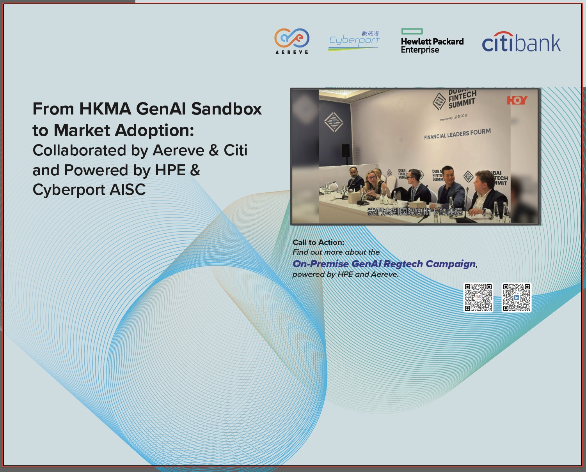

FOR IMMEDIATE RELEASE
Strategic Partnership Delivers Industry-First On-Premise GenAI Solution for AML/KYC Compliance, Achieving 81.2% Accuracy in HKMA-Supervised Pilot with Citibank
HONG KONG – October 28th, 2025 – Aereve, a leading AI-powered AML/KYC and risk management platform, today announced the launch of its Cloud & On-Premise GenAI RegTech Campaign in partnership with Hewlett Packard Enterprise (HPE), following successful validation in the inaugural Hong Kong Monetary Authority (HKMA) GenAI Sandbox. The solution, developed in collaboration with Citibank and powered by the Cyberport AI Supercomputing Centre (AISC), addresses the critical challenge of deploying Generative AI for financial compliance while maintaining the highest standards of data privacy and security.
Aereve will showcase this groundbreaking solution at the upcoming HKMA GenAI event, where financial institutions can experience firsthand how the seamless integration of enterprise-grade hardware, patented AI software, and intelligent middleware is revolutionizing AML/KYC compliance in the Asia-Pacific region.

Aereve representatives at the HKMA GenAI Sandbox event, showcasing the collaboration with Citibank and powered by HPE & Cyberport AISC
As financial institutions worldwide seek to harness the transformative potential of Generative AI, they face a critical paradox: how to leverage powerful large language models (LLMs) without compromising the privacy and security of sensitive customer data. Recent regulatory guidance from the Monetary Authority of Singapore (MAS) in April 2025 and the HKMA has further intensified this challenge by mandating screening in customers' native languages, particularly for non-Latin scripts—an area where Western-centric technologies have historically fallen short.
The Cloud & On-Premise GenAI RegTech Campaign represents a paradigm shift in how financial institutions can adopt GenAI technology. By bundling HPE's enterprise-grade GPU infrastructure with Aereve's patented Native-to-Native Natural Language Processing (NLP) technology and GenAI-powered analytics, the partnership eliminates the traditional barriers to on-premise GenAI deployment—including the need for specialized hardware procurement, complex model fine-tuning, and ongoing maintenance expertise.
Key features of the solution include:
Aereve's participation in the HKMA GenAI Sandbox—as the only Cyberport technology firm approved into the inaugural cohort—provided real-world validation of the solution's effectiveness under regulatory supervision. Working with Citibank and leveraging the computational power of the Cyberport AISC's NVIDIA H800 GPUs, Aereve fine-tuned the Llama-3.2-3B-Instruct model on 500 AML screening cases using advanced techniques including Low-Rank Adaptation (LoRA) and Reinforcement Learning from Human Feedback (RLHF).
HKMA GenAI Sandbox Performance Results: Aereve's fine-tuned model achieves 81.2% accuracy, outperforming baseline and benchmark models
The Aereve-HPE solution enables three transformative use cases that are reshaping the AML/KYC workflow:
Automated, large-scale searches across web (Google/Baidu), local news sites, blogs, and social media in multiple languages, with GenAI-powered sentiment analysis and relevance classification. This delivers a 90% reduction in manual review time, allowing compliance officers to focus on high-risk alerts and strategic analysis.
Automatic analysis of alerts from native-to-native name screening, cross-referenced with rich contextual data (entity URLs, LinkedIn profiles, images, structured data files) to intelligently distinguish true matches from false positives. This achieves 81.2% accuracy in relevance classification, significantly reducing alert backlogs and enhancing overall program accuracy.
Integrated risk assessment linking on-chain wallet addresses (Know Your Address - KYA) to off-chain entity information (KYC), with GenAI contextualization. This addresses a critical gap for Virtual Asset Service Providers (VASPs) and other institutions operating in the digital asset space, enabling seamless compliance across traditional and blockchain-based transactions.
The success of this initiative reflects the power of strategic public-private partnerships in accelerating financial technology innovation. In addition to HPE, Aereve has collaborated with:
This collaboration earned Aereve and Citibank the RegulationAsia Banking Industry Collaboration of the Year Award in 2024, and Aereve was recognized in the FinCrimeTech50 2025 as one of the global top 50 financial crime technology companies and grand winner of Thomson Reuters Asian Legal Business Regulatory Technology Provider of the Year 2023 & 2025.
Financial institutions interested in learning more about the Cloud & On-Premise GenAI RegTech Campaign are invited to visit Aereve's booth at the upcoming HKMA GenAI event. Attendees will have the opportunity to:
For more information about the solution, visit aereve.com or scan the QR code at Aereve's event booth.
Aereve is a leading AI-powered AML/KYC and overall risk management platform with a mission to be the most reliable solution in the multicultural on-chain and off-chain business world. With patented Native-to-Native Natural Language Processing (NLP) technology, Aereve delivers compliance solutions that reduce false positives by 80% while achieving 95%+ accuracy. The company's "blended East & West RegTech" approach has been proven across diverse sectors including banks, casinos, insurers, securities firms, universities, government agencies, and Virtual Asset Service Providers (VASPs) across Asia, UAE, and Europe. Aereve transforms regulatory compliance from a cost burden into a competitive advantage, minimizing fraud risks and increasing business opportunities seamlessly across traditional and digital asset requirements.
Website: aereve.com
Email: office@aereve.com
Hewlett Packard Enterprise (NYSE: HPE) is the global edge-to-cloud company that helps organizations accelerate outcomes by unlocking value from all of their data, everywhere. Built on decades of reimagining the future and innovating to advance the way people live and work, HPE delivers unique, open and intelligent technology solutions as a service. With offerings spanning Cloud Services, Compute, High Performance Computing & AI, Intelligent Edge, Software, and Storage, HPE provides a consistent experience across all clouds and edges, helping customers develop new business models, engage in new ways, and increase operational performance.
Website: hpe.com
Cyberport is Hong Kong's digital technology flagship and incubator for entrepreneurship with over 2,000 members including start-ups and technology companies. The Cyberport AI Supercomputing Centre (AISC) is equipped with cutting-edge NVIDIA GPU infrastructure to support AI research and development, providing computational resources for fine-tuning large language models and other advanced AI applications.
Website: cyberport.hk
Aereve
Terry Ng
Chief Strategy Officer
Email: terry.ng@aereve.com
Phone: +852 5107 2626
Hewlett Packard Enterprise
Benny Tsang
Head of Channel Partner Ecosystem & Sales, HK & Macau at Hewlett Packard Enterprise
Email: btsang@hpe.com
Phone: +852 9501 0101
This press release contains forward-looking statements that involve risks, uncertainties, and assumptions. If the risks or uncertainties ever materialize or the assumptions prove incorrect, the results of Aereve and its consolidated subsidiaries may differ materially from those expressed or implied by such forward-looking statements. All statements other than statements of historical fact are statements that could be deemed forward-looking statements. Aereve assumes no obligation and does not intend to update these forward-looking statements.